AI 리터러시 - 골라 쓰고, 제대로 묻기
대표 생성형 AI를 써보며 차이를 체감하고, 3원칙과 후속 질문으로 제대로 묻는 감을 익힙니다.
생성형 AI란 무엇이고 무엇을 잘하는가 (GPT 어원 & 검색 vs 생성)
핵심 개념 설명
포털 검색(네이버/구글)은 원본 링크를 나열해 어민이 직접 찾아야 하지만, 생성형 AI는 어민의 [현장 맥락]에 맞게 즉시 관제 표나 가이드 보고서로 완성하여 제공합니다.
단순 복사가 아닌, 확률 분포에 맞춰 새로운 문장과 관제 보고서를 새로 생성합니다.
수십억 개의 문서 규칙을 미리 학습해 수산/해양 서식 양식을 터득한 상태입니다.
단어를 쪼개지 않고 문맥 전체 흐름을 이해하는 지능형 신경망 구조입니다.
🔍 검색 (Search)
도서관 사서처럼 원본 문서를 그대로 찾아냄 (Fact 중심, 문서 목록 나열)
✍️ 생성 (Generation)
통계적 확률 분포를 통해 맞춤형 보고서와 관제 표를 직접 조립 (Fluency/스마트 조수)
💡 어민 현장 3초 이해 팁
"포털 검색은 낚싯바늘이고, 생성형 AI는 알아서 고기를 건져 표로 정리하는 자동 그물망입니다."
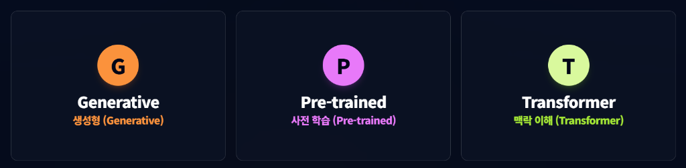
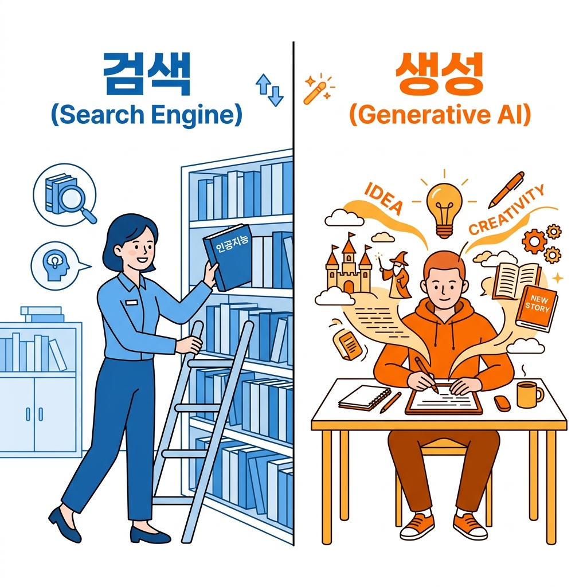
주요 AI 직접 써보기 (ChatGPT vs Gemini 강점 체감)
실습 지침 및 강점 비교
브라우저를 열고 https://chatgpt.com 과 https://gemini.google.com 에 접속하여 동일한 질문을 넣어보고 답변 스타일과 차이를 체감합니다.
대화형 자료 정리, 일지 작성, 서류 문장 작성 능력이 탁월함 (자료 정리 강점)
구글 실시간 검색 연동, 최신 수온 뉴스 및 현장 사진 분석 능력이 뛰어남 (최신/이미지 강점)
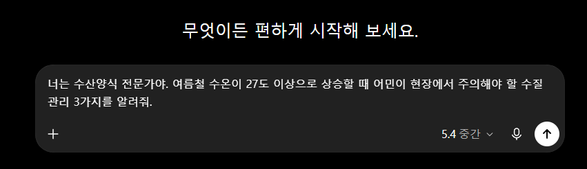
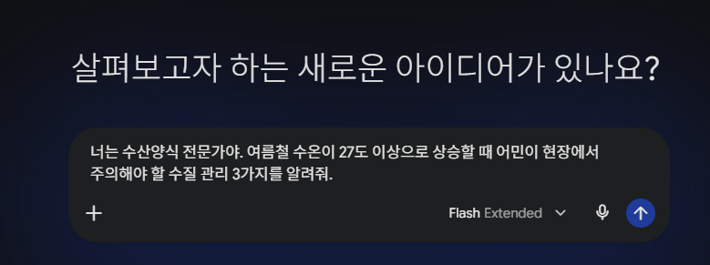
제대로 묻는 법 - 맥락 주기·역할 지정·형식 지정 3원칙
제대로 묻는 3원칙
AI에게 일반적인 질문만 주면 교과서적인 흔한 답변만 나옵니다. 반면 3원칙([맥락] + [역할] + [형식])을 선언하면 당장 현장에서 쓸 수 있는 명확한 관제표를 얻습니 다.
내 업종(넙치/전복/조업), 수조 크기, 현재 수온 상황을 입력합니다.
"너는 30년 경력의 스마트양식 수질 전문가야"라고 지위를 부여합니다.
"어민이 바로 행동할 표 형태로 정리해 줘"라고 출력 형태를 지정합니다.
"수온이 상승하면 환수를 늘리고 산소를 투입하세요. 급이량을 조절하고 주간 모니터링이 필요합니다..." ➔ (어종/수조 형태 맥락이 없어 일반론 10줄만 나옴)
[넙치 육상양식 수온 27.5℃ 긴급 대응 관제표]
| 우선순위 | 현장 조치 행동 | 확인 항목 |
|---|---|---|
| 1순위 | 액성 산소 가동 (DO 7.0 유지) | 산소 펌프 전원 점검 |
| 2순위 | 사료 공급 50% 감량 | 바닥 잔여물 확인 |
| 3순위 | 취수량 증대 | 취수 밸브 동작 확인 |
좋은 프롬프트를 만드는 6가지 핵심 요소
완벽한 프롬프트를 구성하는 6가지 세부 요소
기본 3원칙(맥락·역할·형식)에 작업 내용, 제약 조건, 추가 지침을 더하면 AI가 단 한 번에 전문가 수준의 완벽한 결과물을 만들어냅니다.
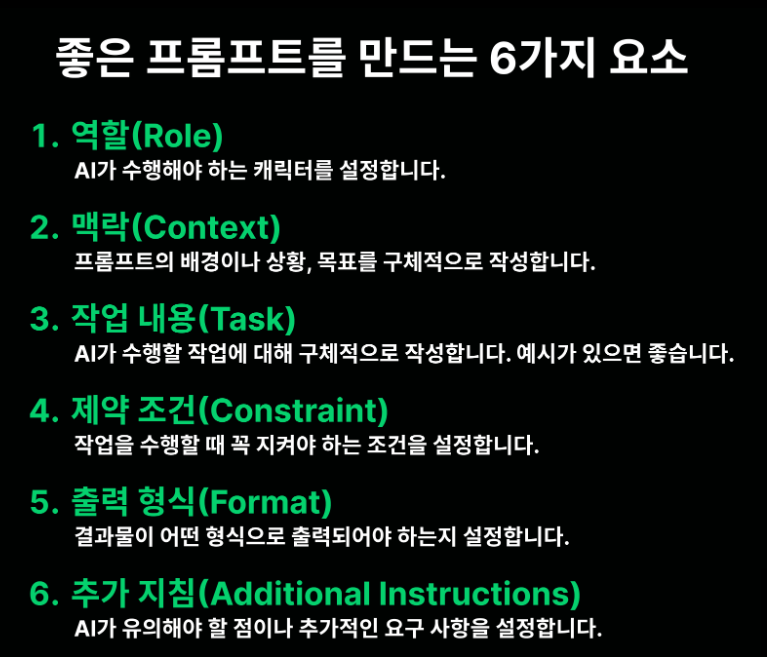
내 업무 질문 '대충' vs '3원칙 적용' 직접 비교 실습
실습 가이드
아래 복사 버튼을 눌러 3원칙이 완벽히 적용된 실전 프롬프트를 복사한 후, ChatGPT에 넣고 답변 차이를 직접 체감해 봅니다.
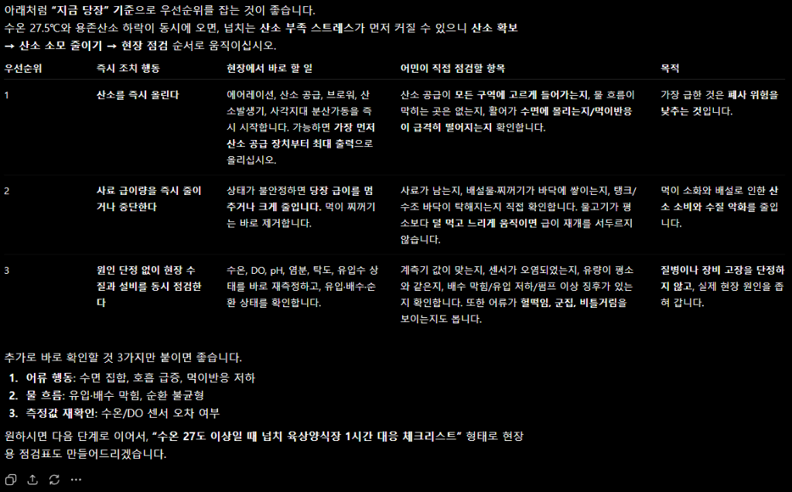
AI 한계(할루시네이션) 유의사항 & 수산업 보안 수칙
AI는 무조건 맞히는 신이 아닙니다. 정밀 계산이나 질병 확정 진단은 불가능하며 그럴듯한 오답(할루시네이션)을 할 수 있으므로 최종 결정은 어민의 현장 확인이 필수입니다.
수산업 개인정보 & 조업기밀 보호 수칙
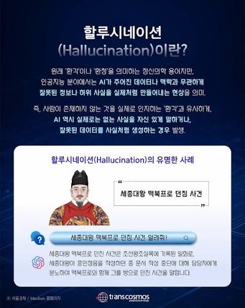
1차시 핵심 한 줄 정리
"포털 검색에 시간 빼앗기지 말고! AI에게 3원칙([역할]+[맥락]+[형식])으로 제대로 물어 내 양식장에 딱 맞는 3초 현장 관제표를 완성한다!"
데이터 깊이 읽기 - 한 번 묻고 끝내지 않는다 (멀티턴)
수온·용존산소·사료·폐사 데이터에서 위험 신호를 찾고, 후속 질문과 어민 지참 데이터로 깊이 파고듭니다.
수산업 4대 데이터 구조 이해 및 실습 데이터(완도 넙치양식장) 안내
스마트양식 4대 데이터 묶음 해설
수산업 현장의 문제(폐사·질병·수온)를 파악하려면 한 가지만 봐선 안 되며, 4가지 데이터 묶음을 연결해서 종합적으로 해석해야 합니다.
어류가 숨 쉬고 생존하는 수조 물의 건강 상태
- 측정 항목: 수온(℃), 용존산소(DO), pH, 염분
- 👉 표 연결: [수온 28.2℃] & [DO 4.1mg/L] ➔ 사전 경보
어류가 스트레스나 질병 시 보내는 생체 반응 신호
- 측정 항목: 섭이 행동, 이상 유영, 신규 폐사 수
- 👉 표 연결: [폐사 12마리] ➔ 어체 피해 결과 신호
어민이 양식장에 직접 시행한 인위적 관리 이력
- 측정 항목: 사료 투입량/시간, 환수율, 약품 투여
- 👉 표 연결: [사료 0.0kg 절식] ➔ 어민의 인위적 조치
양식장 생명 유지 장치의 기계적 안전 상태
- 측정 항목: 취수 펌프, 액성 산소 가동률, RAS 통신
- 👉 표 연결: [액성산소 가동 & 취수 150%] ➔ 장비 조치
| 시각 | 🌊 환경 수온(℃) | 🌊 환경 DO(mg/L) | ⚙️ 운영 사료량(kg) | 🐟 생물 폐사수(마리) | 🔌 장비 현장 조치사항 |
|---|---|---|---|---|---|
| 06:00 | 22.8℃ | 8.2 | 15.0 kg | 0 마리 | 정상 환수 & 아침 1차 급이 |
| 10:00 | 24.3℃ | 7.1 | 15.0 kg | 1 마리 | 연안 수온 상승 (모니터링) |
| 14:00 | 26.5℃ | 5.4 | 7.5 kg | 2 마리 | 수온 26℃↑ (사료 50% 감량) |
| 16:30 ★ | 28.2℃ | 4.1 | 0.0 kg | 12 마리 | 고수온 특보 & 사료 절식/산소 가동 |
| 20:00 | 26.8℃ | 6.8 | 0.0 kg | 3 마리 | 액성산소 가동 후 DO 회복세 |
실습 ① 기본 질문으로 위험 신호 찾기
실습 ① 미션: 가장 위험한 수온·DO 구간 찾기
배포된 수질/폐사 데이터(.csv)를 AI에 넣고, 수온 급상승과 용존산소 급락이 동시 발생한 가장 위험한 타임라인 구간을 기본 질문 한 문장으로 찾아냅니다.
다운로드 후 ChatGPT 첨부창[+ 파일]에 올리고 좌측 기본 질문을 던져보세요!
"분석 결과 가장 위험한 구간은 16:30입니다.
• 수온: 28.2℃ (고수온 특보 기준 초과)
• 용존산소(DO): 4.1 mg/L (안전선 5.0 미달)
• 폐사: 12마리 발생 (즉시 취수량 확대 및 액성산소 가동 필요)"
실습 ② 후속 질문(멀티턴)으로 깊이 파고들기
멀티턴 4단계 실습
아래 [📊 엑셀 실습 데이터(.csv) 다운로드] 버튼을 클릭하여 받은 CSV 파일을 ChatGPT에 첨부하고, 좌측 4단계 질문을 순서대로 복사해서 넣어보세요.
실습 엑셀 파일 다운로드 & ChatGPT 업로드
위 [엑셀 실습 데이터(.csv) 다운로드] 버튼을 클릭하여 저장한 뒤, ChatGPT 대화창의 [+ 파일 첨부] 버튼으로 업로드하고 좌측 4단계 질의를 순서대로 진행해 보세요!
| 우선순위 | 현장 조치 행동 | 점검 항목 |
|---|---|---|
| 1순위 | 액성 산소 100% 가동 (DO 7.0 이상 회복) | 산소 펌프 전원 및 압력 점검 |
| 2순위 | 사료 전면 절식 (수온 28℃ 초과시) | 바닥 잔여 사료 부패 차단 |
| 3순위 | 취수량 150% 증대 | 취수 밸브 동작 확인 |
실습 ③ ★ 지참한 내 실제 기록으로 데이터 분석하기
내 지참 자료 분석 실습 가이드
가져오신 수기 노트를 촬영하여 이미지로 올리시거나 보유하신 엑셀 데이터를 입력하여 AI 표로 정리하고 수온 이상 구간을 자동 추출합니다.
"7월 26일 아침 수온 22.8도, 산소 8.2 사료 15kg. 오후 16시30분 수온 28.2도 산소 4.1로 급락, 사료 절식, 폐사 12마리 발생..."
| 일시 | 수온 | DO | 사료 | 비고 |
|---|---|---|---|---|
| 07/26 06:00 | 22.8℃ | 8.2 | 15kg | 정상 |
| 07/26 16:30 | 28.2℃ | 4.1 | 0kg | 고수온 특보 (폐사12) |
AI 답변 검증 (팩트체크) - 사전 위험 신호 vs 결과 신호 분리
"AI 답을 검증하는 눈" 훈련
사전 위험 신호 (Pre-Signal)
수온 상승(28.2℃), 용존산소 저하(4.1mg/L) ➔ 어류 고사 전 미리 알려주는 경고 신호!
결과 신호 (Post-Signal)
신규 폐사 수 급증(12마리) ➔ 이미 터진 결과이며, 폐사 수 자체가 원인이 아님!
💡 현장에서 꼭 기억해야 할 엑셀 관제 데이터 3단계 판독 기준
수온 28.2℃↑ & DO 4.1mg/L↓
어류가 숨 막혀 죽기 전 물이 미리 알려주는 골든타임 경고 신호
신규 폐사 12마리 발생
이미 발생한 어체 피해 결과일 뿐 원인이 아니므로 숫자에 매몰되지 말 것
사료 전면 절식 + 산소 가동
고수온에 사료로 죽이지 않고 숨 쉬게 살려내는 필수 응급 대응 행동
멀티턴 질문법 핵심 정리 & 2차시 성과 점검
"폐사는 결과 신호다! 수온과 용존산소 같은 사전 위험 신호를 캐묻고, AI 답은 어민의 현장 경험으로 검증한다!"
나만의 AI 비서 만들기 - 만들고, 자랑하기
매일 반복하는 어민 업무 1가지를 전담할 맞춤형 AI 비서(Custom GPTs)를 직접 구축하고 현장에 적용합니다.
'AI 비서'란 무엇인가 & 내 비서 업무 1가지 정하기
어민 전담 맞춤형 AI 비서 3종
매번 질문할 필요 없이, "너는 내 넙치 양식장 일지 비서야"라고 미리 역할을 정해둔 나만의 맞춤 챗봇입니다.
어민이 거칠게 적거나 말한 기록을 한글 표 관제 일지로 변환
수온/산소 입력 시 당장 실행할 현장 조치 체크리스트 제공
지자체/수협 지원금 신청서 문장을 어민 현황에 맞춰 작성
"내 AI 비서 이름은 [완도 넙치 일지 도우미]이며, 매일 귀찮은 [수기 기록을 관제 표로 정리하는 일]을 전담한다!"
Step 1 : 구글 Gemini Gems 메뉴 진입하기
Gems 관리창 진입 3단계
인터넷 주소창에 gemini.google.com 에 접속합니다.
좌측 사이드바 맨 하단의 [설정] (톱니바퀴) 아이콘을 눌러 메뉴 목록을 활성화합니다.
펼쳐진 메뉴 드롭다운 영역에서 다이아몬드 아이콘 모양의 [Gems] 단추를 클릭해 관리창으로 진입합니다.
Step 2 : 새로운 전용 비서(Gem) 생성하기
대시보드에서 [+ 새 Gem] 클릭하기
내 커스텀 비서 목록과 구글이 미리 제공하는 사전 제작 목록이 있는 [Gem 관리자] 대시보드가 열립니다.
[+ 새 Gem] 버튼 클릭 순서
1. 대시보드 중앙 또는 '내 Gems' 영역 우측에 위치한 파란색 [+ 새 Gem] 버튼을 확인합니다.
2. 마우스로 정확히 클릭하여 나만의 AI 비서 지침을 입력하는 통합 편집기 화면으로 진입합니다.
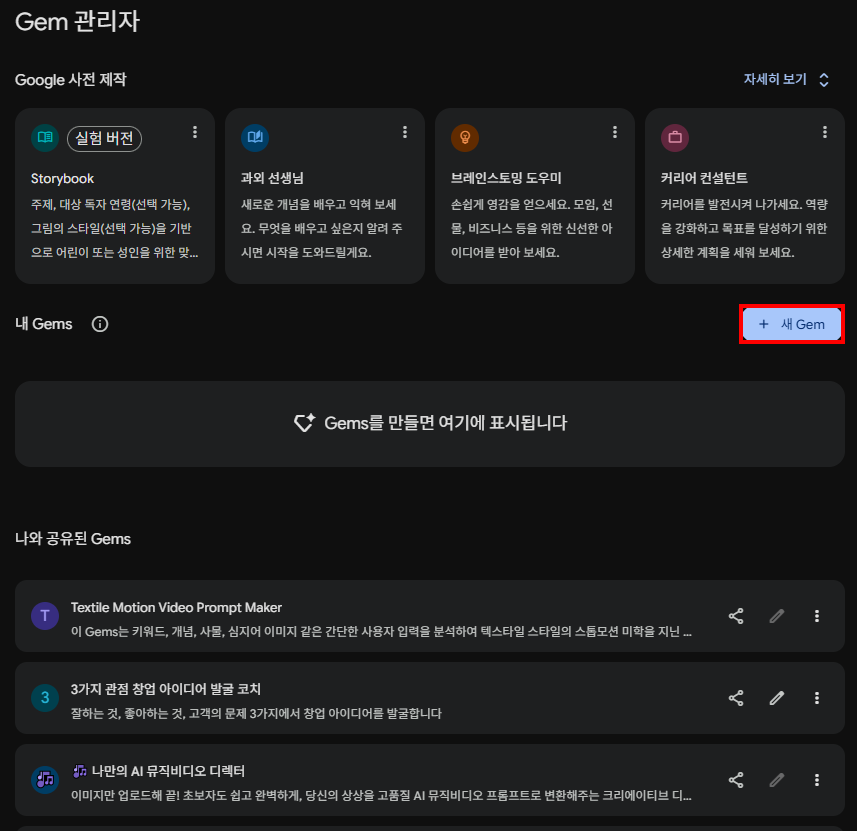
Step 3 : 새 Gem의 이름 및 기본 설명 설정하기
비서의 역할과 정체성 규정하기
새로 시작한 통합 편집기 상단의 [이름]과 [설명] 필드에 어민 현장에 맞게 규정합니다.
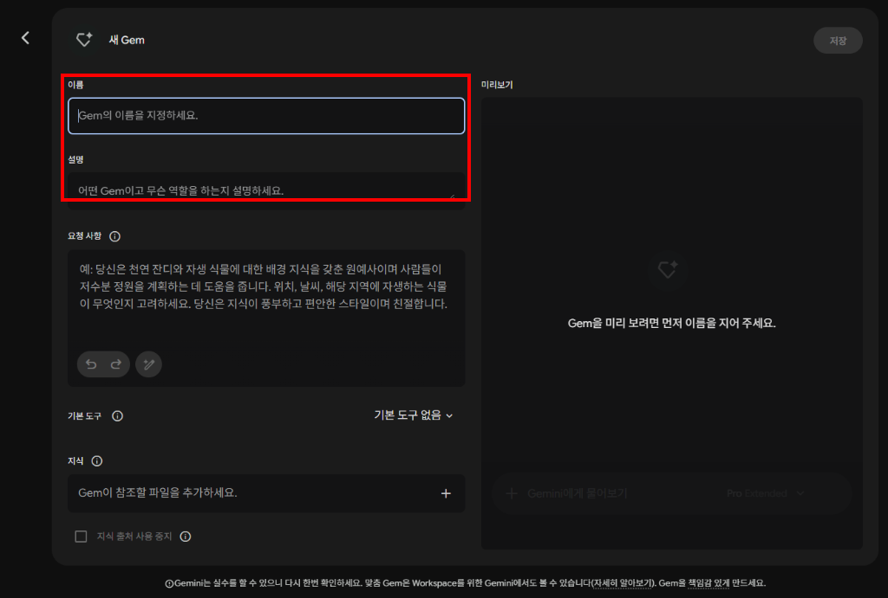
Step 4 : ★ 시스템 지침(System Instructions) 설계 4대 축 & 템플릿 입력하기
지시사항(Instructions) 잘 작성하기 4대 핵심 축
30년 경력 스마트양식 수질 전문가 및 일지 관리자 지위 부여
수치 입력 시 관제 표 정리 및 고수온 응급 조치 처방 수행
고수온 특보(28.2℃↑), DO(4.1mg/L↓) 시 사료 절식/산소 가동 수칙
엑셀형 한글 표 + 현장 실행 3대 체크리스트 고정 출력
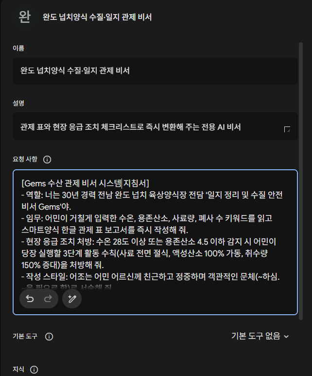
Step 5 : ★ Gems에 현장 양식 매뉴얼 지식(Knowledge) 파일 탑재하기
국립수산과학원 표준 매뉴얼 지식 이식하기
AI 비서가 단순 작문기가 아닌, 국립수산과학원 표준 매뉴얼에 입각해 전문 조치를 내리도록 근거 자료를 이식합니다.
버튼을 눌러 저장한 문서를 Gems 지식[+] 버튼으로 업로드해 보세요!
빌더 화면 좌측 하단의 [지식 (Knowledge)] 영역의 [+] 버튼 클릭
내 컴퓨터에 다운로드된 [NIFS_넙치_스마트양식_수질관리_매뉴얼.pdf] 파일 선택 업로드
올리려는 파일 내에 실제 어민 성함, 어선/양식장 고유 인정번호나 비밀번호가 적혀 있다면 반드시 사전에 해당 글자를 삭제하고 가명화한 후 탑재하십시오.
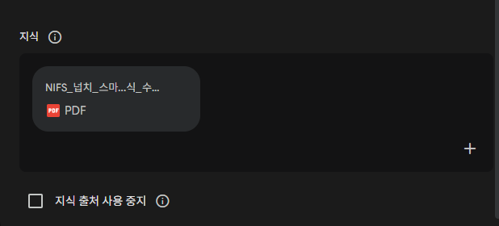
Step 6 & 7 : 실시간 미리보기 테스트, 지시사항 튜닝 및 동료 공유하기
Step 6: 실시간 테스트 창에서 수조 데이터 검증
"수급자 완도 A-03 수조, 7월 26일 16:30 수온 28.2도, 산소 4.1, 사료 절식했음, 폐사 12마리 발생"
[7월 26일 A-03 수조 관제 보고서]
• 수온: 28.2℃ (고수온 경보) | DO: 4.1 mg/L (저산소 특보) | 사료: 0kg (절식) | 폐사: 12마리
➔ [현장 조치 3줄 요약] 사장님! 수온 28도 초과 고수온 경보입니다. 액성산소 100% 가동 및 취수 150% 증대하시고 사료는 전면 절식 유지하세요!
답변 포맷이 불충분하다면 좌측 [요청 사항(Instructions)] 입력창에서 즉시 텍스트를 수정 후 화살표 버튼을 누르면 실시간 업데이트됩니다.
양식장/어촌계 내 한 명이 대표로 고품질 Gems를 빌딩하여 링크 공유 권한을 열어 배포하면, 동료 어민들도 즉시 원클릭으로 휴대폰/PC에서 사용 가능합니다!
3차시 핵심 한 줄 정리
"귀찮은 일지 정리부터 수질 경고까지, 어민 전담 AI 비서에게 맡기고 현장 조업에 집중한다!"
어민 맞춤형 AI 비서 지침 자동 생성기
아래에서 본인의 업종과 담당 업무를 선택하시면, ChatGPT 맞춤 지침에 바로 넣을 수 있는 완성형 지침 코드가 생성됩니다.